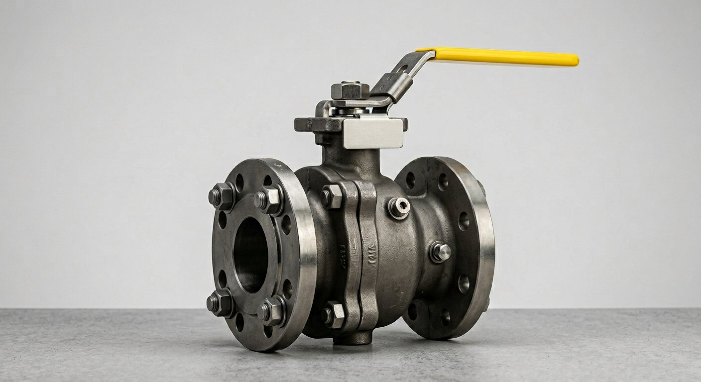

خرید و تامین تخصصی شیر توپی صنعتی (Ball Valve API 6D)
تامین انواع بال ولو فلوتینگ و ترانیون در متریالهای کربن استیل (WCB)، استیل ۳۱۶ (CF8M) و آلیاژی

شیر توپی صنعتی (Ball Valve) یکی از حیاتیترین تجهیزات قطع و وصل جریان (Quarter-Turn On/Off) در خطوط لوله نفت، گاز و پتروشیمی است. شرکت پیشرو تجهیز فرتاک تامینکننده انواع بال ولو از برندهای معتبر جهانی مورد تایید وندور لیست (مانند KITZ ژاپن، JC اسپانیا، Neway و OMB ایتالیا) با گواهی معتبر MTC EN 10204 3.1 میباشد.
ساختار Trunnion Mounted (کلاس 600 به بالا)
در این طراحی، گوی (Ball) توسط دو محور بالا و پایین ثابت شده و سیتها به سمت گوی حرکت میکنند. گشتاور عملیاتی (Torque) پایین بوده و برای سایزهای ۲ اینچ به بالا در فشار قوی ایدهآل است.
ساختار Floating Ball (کلاس 150 و 300)
گوی درون سیال شناور است و فشار خط آن را به سمت سیت خروجی فشار میدهد. اقتصادیترین انتخاب برای خطوط فرآیندی عمومی و تاسیسات یوتیلیتی.
استعلام قیمت و زمان تحویل بال ولو (Ball Valve RFQ)
سایز، کلاس فشاری و متریال مورد نیاز پروژه را وارد فرمایید تا پیشفاکتور رسمی صادر گردد:
ثبت استعلام بال ولو در سامانه RFQ ←